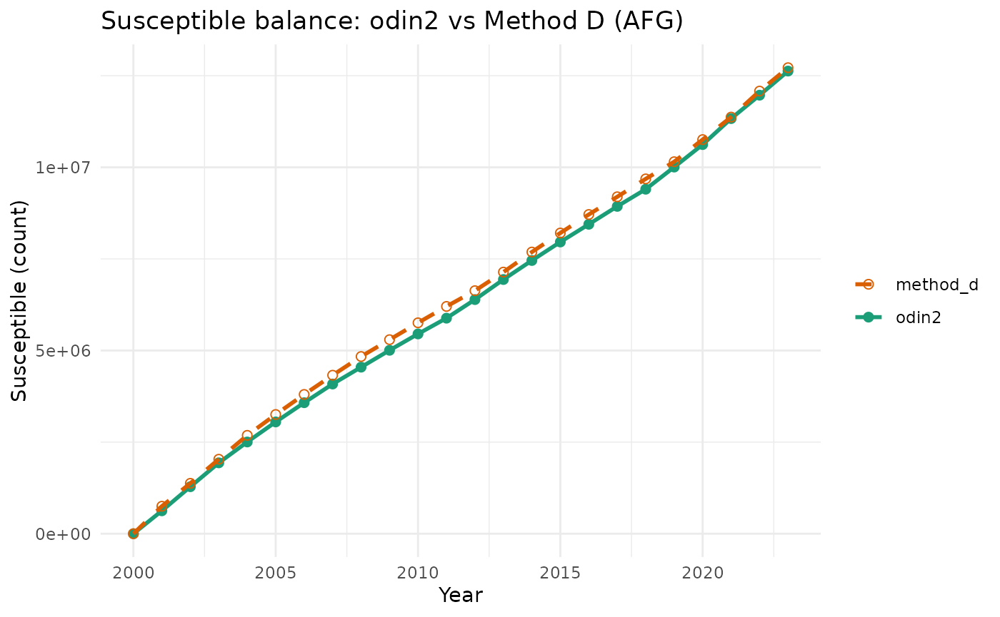

Mechanistic modelling in odin2 (annual SIRV)
Source:vignettes/mechanistic_odin2.Rmd
mechanistic_odin2.RmdIt answers three practical questions:
- What does each mechanistic helper do?
- How does the discrete susceptible-balance model relate to Method D?
- How can we run and interpret an annual SIRV model?
1) Mechanistic function map
Model choices in this package:
-
balance_discrete: one-state susceptible recurrence (teaching bridge to Method D). -
sirv_annual: annualS,I,R,Vmodel with births, vaccination, infection, recovery, mortality, and reported cases output.
2) Minimal discrete model
Start with a one-state difference equation model:
S[t+1] = S[t] + inc
mdl <- odin2_build_model("minimal_discrete")
out <- odin2_simulate(
mdl,
times = 0:10,
pars = list(inc = 1),
initial = list(S = 0)
)
out
#> # A tibble: 11 × 2
#> time S
#> <int> <dbl>
#> 1 0 0
#> 2 1 1
#> 3 2 2
#> 4 3 3
#> 5 4 4
#> 6 5 5
#> 7 6 6
#> 8 7 7
#> 9 8 8
#> 10 9 9
#> 11 10 10Interpretation: with inc = 1, the state increases
linearly each step.
3) Susceptible-balance recurrence model
The balance_discrete model uses:
S[t+1] = max(0, S[t] + births[t] - vaccinated[t] - cases[t] / rho)
mdl_bal <- odin2_build_model("balance_discrete")
out_bal <- odin2_simulate(
mdl_bal,
times = 0:5,
pars = list(rho = 1, births = 0, vaccinated = 0, cases = 1),
initial = list(S = 3)
)
out_bal
#> # A tibble: 6 × 2
#> time S
#> <int> <dbl>
#> 1 0 3
#> 2 1 2
#> 3 2 1
#> 4 3 0
#> 5 4 0
#> 6 5 0With these parameters, susceptibles decrease by 1 each step and floor at 0.
4) End-to-end panel to mechanistic inputs
panel_path <- system.file("extdata", "example_panel_measles_global.csv", package = "vpdsus")
panel <- utils::read.csv(panel_path)
panel_ok <- panel |>
dplyr::filter(!is.na(iso3), !is.na(year), !is.na(births), !is.na(coverage), !is.na(cases))
iso3 <- panel_ok$iso3[[1]]
times <- sort(unique(panel_ok$year[panel_ok$iso3 == iso3]))
inputs <- odin2_balance_inputs_from_panel(panel_ok, times = times, iso3 = iso3)
inputs
#> $births
#> [1] 1036531 1006568 1015204 1069726 1095382 1097034 1120872 1135655 1126518
#> [10] 1158026 1181115 1202464 1243855 1274015 1300092 1331754 1344024 1362282
#> [19] 1382420 1405901 1429964 1453695 1462664 1469032
#>
#> $vaccinated
#> [1] 279863.3 372430.2 355321.4 417193.3 525783.3 548517.0 594062.2 624610.1
#> [9] 664645.5 694815.5 732291.5 769576.7 733874.2 726188.8 780055.4 825687.2
#> [17] 860175.4 871860.7 912397.3 801363.4 815079.3 741384.4 819092.0 807967.8
#>
#> $cases
#> [1] 6532 8762 2486 798 466 1296 1990 1141 1599 2861 1989 3013 2787 430 492
#> [16] 1154 638 1511 2012 353 640 2900 5166 2792
out_panel <- odin2_simulate(
mdl_bal,
times = times,
pars = list(rho = 1),
initial = list(S = 0),
inputs = inputs
)
out_panel
#> # A tibble: 24 × 2
#> time S
#> <int> <dbl>
#> 1 2000 0
#> 2 2001 625376.
#> 3 2002 1282773.
#> 4 2003 1934508.
#> 5 2004 2503640.
#> 6 2005 3050861.
#> 7 2006 3575681.
#> 8 2007 4085585.
#> 9 2008 4545858.
#> 10 2009 5006207.
#> # ℹ 14 more rows5) Compare with Method D
balance_discrete is intended to match Method D under
matched assumptions.
sus_d <- estimate_susceptible_case_balance(
panel_ok |> dplyr::filter(.data$iso3 == .env$iso3),
rho = 1,
s0 = 0,
coverage_col = "coverage",
births_col = "births",
cases_col = "cases",
pop_col = "pop_total",
age_group = "total"
)
cmp <- dplyr::left_join(
dplyr::mutate(out_panel, year = time),
dplyr::select(sus_d, year, susceptible_n),
by = "year"
)
cmp
#> # A tibble: 24 × 4
#> time S year susceptible_n
#> <int> <dbl> <int> <dbl>
#> 1 2000 0 2000 0
#> 2 2001 625376. 2001 750135.
#> 3 2002 1282773. 2002 1375511.
#> 4 2003 1934508. 2003 2032908.
#> 5 2004 2503640. 2004 2684643.
#> 6 2005 3050861. 2005 3253776.
#> 7 2006 3575681. 2006 3800997.
#> 8 2007 4085585. 2007 4325817.
#> 9 2008 4545858. 2008 4835720.
#> 10 2009 5006207. 2009 5295993.
#> # ℹ 14 more rows
ggplot2::ggplot(cmp, ggplot2::aes(x = year)) +
ggplot2::geom_line(ggplot2::aes(y = S, colour = "odin2"), linewidth = 1) +
ggplot2::geom_point(ggplot2::aes(y = S, colour = "odin2"), size = 2) +
ggplot2::geom_line(ggplot2::aes(y = susceptible_n, colour = "method_d"), linewidth = 1, linetype = 2) +
ggplot2::geom_point(ggplot2::aes(y = susceptible_n, colour = "method_d"), size = 2, shape = 1) +
ggplot2::scale_colour_manual(values = c(odin2 = "#1b9e77", method_d = "#d95f02")) +
ggplot2::labs(
x = "Year",
y = "Susceptible (count)",
colour = NULL,
title = paste0("Susceptible balance: odin2 vs Method D (", iso3, ")")
) +
ggplot2::theme_minimal(base_size = 11)
6) Calibrate reporting fraction rho
Calibration question:
What rho value would make the model match a chosen
susceptible count at a target year?
target_year <- max(times)
target_susceptible_n <- max(1, out_panel$S[[length(out_panel$S)]] * 0.9)
rho_hat <- tryCatch(
calibrate_rho_case_balance(
panel_ok,
iso3 = iso3,
years = times,
target_year = target_year,
target_susceptible_n = target_susceptible_n,
rho_interval = c(0.01, 1)
),
error = function(e) {
message("Calibration failed for this panel slice; using rho = 1 for demonstration.")
1
}
)
#> Calibration failed for this panel slice; using rho = 1 for demonstration.
rho_hat
#> [1] 1
out_cal <- odin2_simulate(
mdl_bal,
times = times,
pars = list(rho = rho_hat),
initial = list(S = 0),
inputs = inputs
)
out_cal
#> # A tibble: 24 × 2
#> time S
#> <int> <dbl>
#> 1 2000 0
#> 2 2001 625376.
#> 3 2002 1282773.
#> 4 2003 1934508.
#> 5 2004 2503640.
#> 6 2005 3050861.
#> 7 2006 3575681.
#> 8 2007 4085585.
#> 9 2008 4545858.
#> 10 2009 5006207.
#> # ℹ 14 more rows7) Annual SIRV model (spec-required mechanistic baseline)
The annual SIRV model includes:
- compartments
S,I,R,V, - births into
S, - vaccination flow
S -> V, - infection
S -> I, - recovery
I -> R, - mortality from all compartments,
- reporting fraction
rhoapplied to infections.
mdl_sirv <- odin2_build_model("sirv_annual")
times <- 0:15
out_sirv <- odin2_simulate(
mdl_sirv,
times = times,
pars = list(
beta = 0.8,
gamma = 0.4,
mu = 0.01,
rho = 0.25,
births = 50000,
vaccinated = 40000,
n_pop = 1e7
),
initial = list(
S = 2e6,
I = 1e3,
R = 7.95e6,
V = 5e4
)
)
head(out_sirv)
#> # A tibble: 6 × 8
#> time S I R V reported_cases susceptible_n susceptible_prop
#> <int> <dbl> <dbl> <dbl> <dbl> <dbl> <dbl> <dbl>
#> 1 0 2 e6 1000 7.95e6 5 e4 0 0 0
#> 2 1 1.99e6 750 7.87e6 8.95e4 40 2000000 0.2
#> 3 2 1.98e6 562. 7.79e6 1.29e5 29.8 1989840 0.199
#> 4 3 1.97e6 421. 7.71e6 1.67e5 22.2 1979822. 0.198
#> 5 4 1.96e6 314. 7.64e6 2.06e5 16.6 1969935. 0.197
#> 6 5 1.95e6 235. 7.56e6 2.44e5 12.3 1960169. 0.196Key outputs to inspect for susceptibility inference:
-
reported_cases: model-implied observed burden, -
susceptible_n: susceptible count, -
susceptible_prop: susceptible proportion.
dplyr::select(out_sirv, time, reported_cases, susceptible_n, susceptible_prop) |>
head()
#> # A tibble: 6 × 4
#> time reported_cases susceptible_n susceptible_prop
#> <int> <dbl> <dbl> <dbl>
#> 1 0 0 0 0
#> 2 1 40 2000000 0.2
#> 3 2 29.8 1989840 0.199
#> 4 3 22.2 1979822. 0.198
#> 5 4 16.6 1969935. 0.197
#> 6 5 12.3 1960169. 0.196Scope and next step
This pathway now includes both a transparent balance model and a spec-aligned annual SIRV model.
The next student-facing extension is to feed country-year panel
inputs directly into sirv_annual and compare inferred
susceptibility trajectories against Method B/Method D under matched
assumptions.